Team Profiles

Hsiao-Ting Huang
Project managerhthuang@uw.edu

Ruby Lin
Graphic designerhlin28@uw.edu

Chenyu Jin
Web designercjin0224@uw.edu
Virtual reality is a fascinating way to travel using nothing more than the power of technology. Our products allow you to experience social media and games in depth. In addition, we also have a variety of functions that allow you to make the product as your personal assistant, such as detecting blood oxygen concentration and various health data
hthuang@uw.edu
hlin28@uw.edu
cjin0224@uw.edu
- Team name:
All Around
- Logo:
- Team rules
Here are some key things to keep in mind when communicating:
Be responsible first. The unity of words and deeds is very important. You need to be responsible for your words and deeds, and you will also be responsible for your words.
Second please be helpful.
The third is to think carefully. Regardless of your intentions, your statements can be attributed to the company, and you should think carefully when making statements that may cause others to make false assumptions.
Finally, we must work hard to think about possible defects and loopholes, and take the initiative to complete the work in the gray area. For example, some overlapping work areas with colleagues should be resolved through cooperation rather than ignored.
- Team member expectations
We expect our team members are experienced working with 3D computer graphics concepts, a basic understanding of virtual reality concepts, experience working in different parts of the technology stack to complete a project – e.g. across front-end and back-end, PHP, React Native, and/or C++. Besides, our team members should have cross-group and cross-culture collaboration.
- Areas of expertise and deficiencies
For our expertise, we’re focused on building otherworldly experiences that can be shared with anyone—from anywhere and can detect human health data. Our project is driving VR forward with breakthrough work in computer vision, advanced optics, eye tracking, mixed reality, and new ways to map the human body. Virtual reality’s potential is immense, and we’re just getting started.
For deficiencies, we are still working hard to make our VR technology can truly make users feel “all-around”, with the limitation of our team’s size, this is still hard to improve the VR technology.
- Team member role assignments
Team lead:
Lead the entire team and review the direction and actual progress of the product in a rolling manner.
Documentation lead:
Describe and assign specific product direction and division of labor
Testing lead:
The specific test and the feasibility of executing our product and the test by the management engineer
A document that presents the team’s plan for the scope and time dimensions of their project. The plan will be presented in terms of a work breakdown structure (WBS) and a Gantt chart (schedule).
• Identify the stakeholders of this project, what are their stakes? (See table on page 4 of toolkit from Homework 1).
Requirement 1(Measurable) Concept: The specialization of function and mapping to its physical embodiment of form. To realize the function of measuring heart rate and breathing rate, providing Virtual Reality, we designed the Oaround VR headset.
Pugh Matrix
• Describe how you will implement various subsystems
Objectives • Identify different failure modes that can occur as throughout the duration of your project and how those might be mitigated (examples: company changes requirements mid-way through, company fails to give certain resources like code access on time).
• Identify and provide solutions to positive/negative environmental effects of the project, if any Identify and cite some engineering standards (IEEE or other) that will apply to this project.
Work breakdown structure
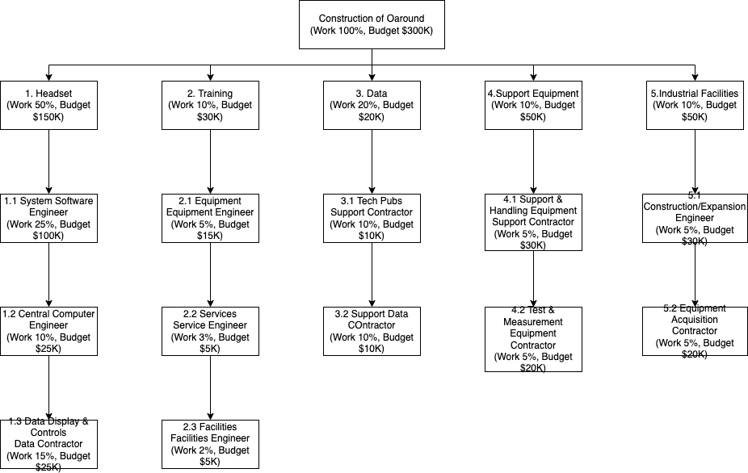
Gantt chart
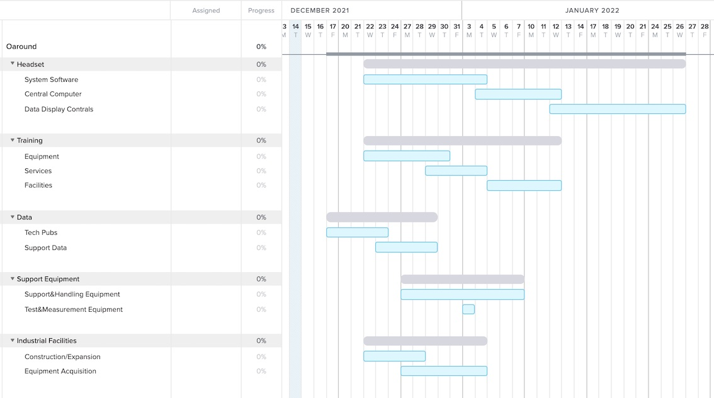
Stakeholder Analysis
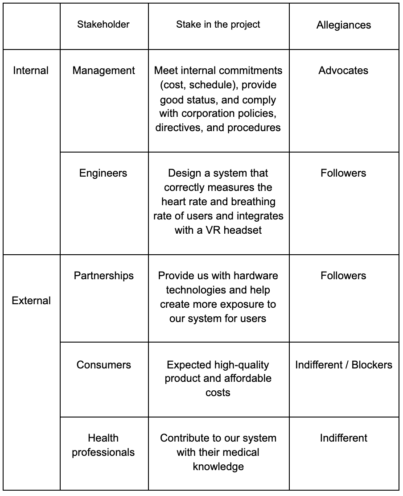
• Provide the stakeholder management strategy for all of the stakeholders (See pages 5 and 6 of toolkit from Homework 1).
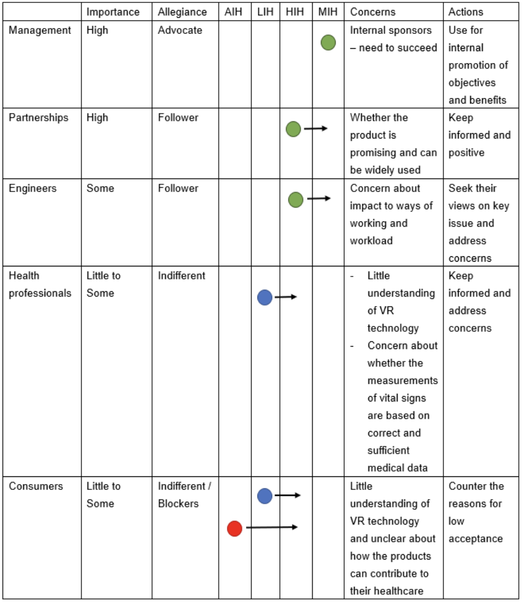
Requirements
L0 The device shall detect human body temperature.
L1.1 Human body temperature upper bound shall be 115 °F.
L1.2 Human body temperature lower bound shall be 56 °F.
L1.3 Human body temperature accuracy shall be +/- 1°F.
L1.4 Human body temperature measurements should be made every 30 seconds.
Requirement 2(Observable)
L0 The device should be made of skin-friendly material.
L1.1 The strap of the device that touches the human body should be silicone rubbers.
L1.2 The device should have no toxic substances that damage the users’ skin.
L1.3 The skin-friendly material shall be in long-term use for more than 10 years.
Requirement 3 (Measurable)
L0 The device should measure the blood pressure by pulse arrival time (PAT)
L1.1 Systolic pressure upper bound shall be 120 mm Hg.
L1.2 Systolic pressure lower bound shall be 90 mm Hg.
L1.3 Diastolic pressure upper bound shall be 80 mm Hg.
L1.4 Diastolic pressure lower bound shall be 60 mm Hg.
L1.5 Blood pressure rate accuracy should be +/- 0.1 mm Hg.
Requirement 4(Measurable)
L0 The device shall measure heart rate in beats per minute.
L1.1 Heart rate upper bound shall be 300 bpm.
L1.2 Heat rate lower bound shall be 30 bpm.
L1.3 Heart rate accuracy should be +/- 3 bpm.
L1.4 Heart rate measurements should be made every 10 seconds.
Requirement 5(Measurable)
L0 The device shall have leakage detection.
L1.1 The device should be able to shut down if the current is up to 10 mA.
L1.2 The device should alert the user if the current is above 0.25 mA.
L1.3 The accuracy of leakage detection shall be +/- 0.1 mA.
Requirement 6(Measurable)
L0 The device should be 5ATM water-resistant.
L1.1 The device should be able to be exposed to sweat.
L1.2 The device should be able to be used while washing hands.
L1.3 The device should be able to use in the rain over 10 hours.
L1.4 The device shall be taken up to 165 ft underwater.
Requirement 7(Measurable)
L0 The device shall be able to detect environmental temperature.
L1.1 The detected environment temperature upper bound shall be 120 °F.
L1.2 The detected environment temperature low bond shall be -85 °F.
L1.3 The detected environment device should be able to shut down if the current temperature is over 120 °F.
L1.4 The device should be able to shut down if the current temperature is lower than -85 °F.
Requirement 8(Measurable)
L0 The device should have a sensor to detect movement.
L1.1 The movement should be detected every 0.1 seconds.
L1.2 The movement should be able to detect 200 meters per second.
Requirement 9 (Measurable)
L0 The device should be able to charge.
L1.1 The adaptor should have a volume over 400 mAh.
L1.2 The adaptor should obey the national standard (ANSI C84) for utility voltage tolerance.
L1.3 The adapter should be able to be used for up to 5 hours.
L.14 The adapter shall be fully charged within 2 hours.
Requirement 10(Measurable)
L0 The device shall have a battery warning light.
L1.1 The device shall light up yellow when the device is lower than 15% of the power.
L1.2 The device shall light up red when the device is lower than 5% of the power.
L1.3 The device shall light up green when the device remains more than 50% of the power.
Requirement 11(Measurable)
L0 The device shall have a vibrator to simulate real-life collisions.
L1.1 The vibrator shall have an upper bound speed up to 14500 rpm.
L1.2 The vibrator shall have a lower bound speed down to 2500 rpm.
L1.3 The vibrator shall break within 0.1 sec.
Requirement 12(Measurable)
L0 The device shall detect an obstacle with ultrasonic sensors.
L1.1 The ultrasonic sensor shall send an ultrasonic pulse out at 40kHz.
L1.2 The device shall use 6 ultrasonic sensors.
L1.3 The device shall trigger the alarm system when the obstacle is within 50cm.
Requirement 13(Observable)
L0 The device should be able to automatically turn off when no one uses it.
L1.1 The device shall turn to standby status when no movement is detected within 10 mins.
L1.2 The device shall arouse within 1 sec in the standby status.
L1.1 The device shall turn off when no movement is detected within 30 mins.
Requirement 14(Observable)
L0 The device shall have Bluetooth to connect with other devices.
L1.1 The device shall directly pair with other Oculus’s wearable biofeedback devices.
L1.2 The device shall use Bluetooth to communicate with paired TV and computer.
L1.3 The Bluetooth shall be up to 2Mbps.
Requirement 15(Measurable)
L0 The device shall be scalable to adapt to wear.
L1.1 The strap length of the device shall have an upper bound of 65cm.
L1.2 The strap length of the device shall have a lower bound of 30cm.
L1.3 The strap length shall be scalable.
Requirement 16(Measurable)
L0 The device shall calculate the calories burned.
L1.1 The user shall upload their height and weight.
L1.2 The calories accuracy should be +/- 10 cal per 10min movement.
Requirement 17 (Observable)
L0 The device shall have 2G to store the information.
L1.1 The information shall store the blood pressure result.
L1.2 The storage shall store the movement pattern.
L1.3 The storage shall store the heartbeats.
Requirement 18(Observable)
L0 The device should protect from falls.
L1.1 The device shall turn off if the height is lower than 30 cm.
L1.2 The device shall use crash-worthy material.
Requirement 19(Observable)
L0 The device shall have 5Ghz wifi.
L1.1 The data shall be uploaded to the user cloud storage when the device is connected to the wifi.
L1.2 If the wifi is available, the other device shall be connected to the device through wifi.
Requirement 20(Measurable)
L0 The device material shall prevent allergies.
L1.1 The device material shall prevent fluorescent material.
L1.2 The device material should test lower than 4% in perchloric acid.
Concept Description, Sketch, and CONOPS
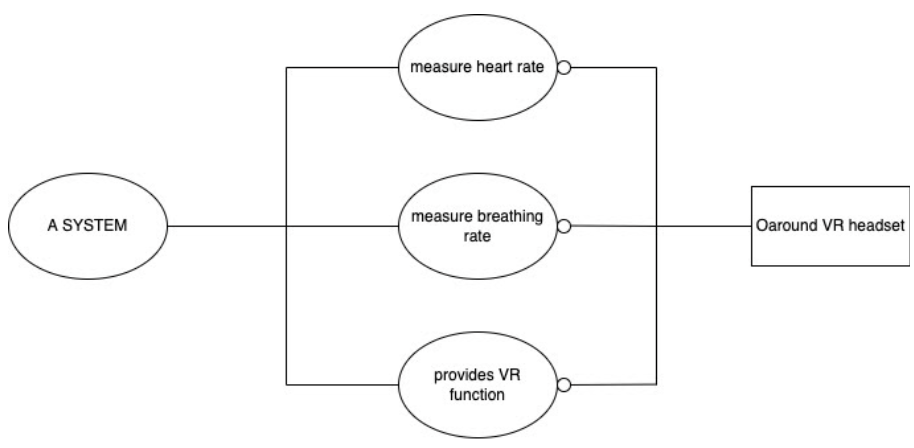
CONOPS: a description of how the system will be operated during the mission phases in order to meet stakeholder requirements.
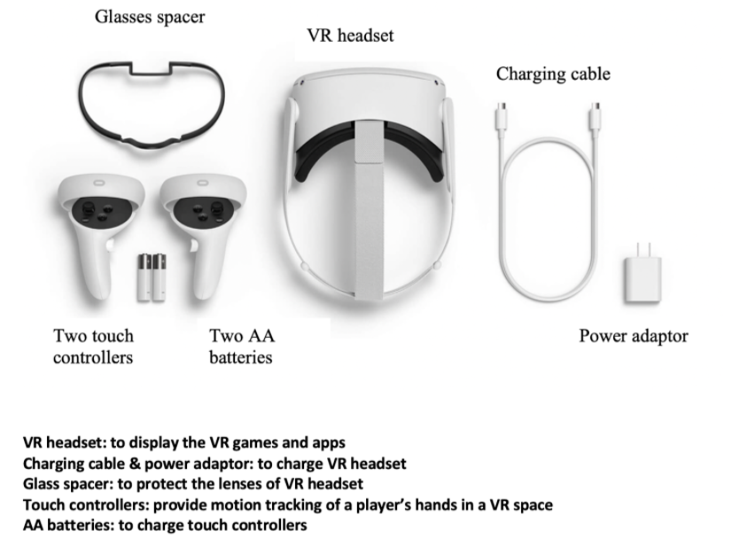
Pugh Matrix and Utility Analysis
The Pugh Matrix is a diagram used to compare multiple product or solution designs and accurately determine which candidate will best meet a set of criteria based on business needs and customer demands. Upon completion of the Pugh Matrix, business leaders are better able to select a candidate for product development and simultaneously allow for qualitative optimization of tangential concepts through the creation of alternative “hybrid” concepts and designs.
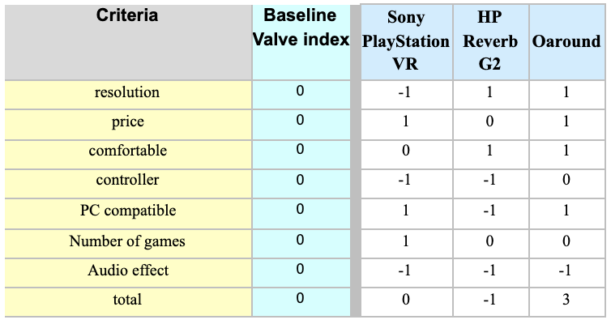
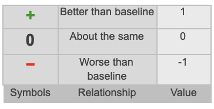
Utility Analysis
Utility is a measure of the relative happiness or satisfaction gained by consuming different bundles of goods and services.
1.Resolution/comfortable/controller/PC compatible/number of games/audio effect
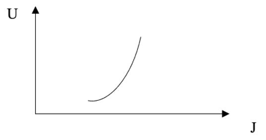
2.Price
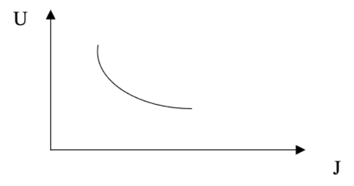
System Design
Our virtual reality (VR) headset is a device used to provide assistance for three-dimensional (3D) simulation, computer games, and health detection applications (such as blood oxygen concentration detection, heart rhythm detection, etc.). Our VR headsets consist of organic light emitting diodes (OLED) or liquid crystal display (LCD) screens, and head motion tracking sensors to provide effective 3D images. The sensor tracks head movement and provides 3D images with up to 360-degree field of view based on head movement.
In image and data processing, we will use CNN model and GAN model to train our image generation.
In addition, our VR heads can also be applied to the medical field to train students in surgical operations and other operations. In addition, we will also develop VR headsets with eye-tracking and motion tracking functions to increase the user’s virtual reality experience. In addition, our headsets will be able to use auxiliary hand devices to track hand movements. Similarly, there is eye technology to develop eye tracking functions.
Test Plan
Make sure the users’ vital signs including heart rate and breathing rate are measured accurately with acceptable deviations according to the system requirements. In addition, provide users with good immersive experiences with less motion sickness, vision impairment, and headaches.
To achieve our objectives, the following approaches are included in the QA process:
User Specifications and Experience Testing
Before any testing begins, QA engineers shall thoroughly review the VR headset scope requirements. After familiarizing themselves with the requirements, they prepare potential use cases in the shoes of the consumers, providing a holistic view of the product.
Real Device Testing
Test on the specialized hardware devices provided by our partnerships. These might include headsets that connect to personal computers for a powerfully immersive VR experience and others that work with the user’s smartphone to create a more mobile VR experience.
Accessibility Testing
Headaches, seizures, motion sickness, eye strain, and other bodily harm are a few of the worst-case scenarios that testers need to be on the lookout for. Though full immersion is the goal, it’s also vital to limit the discomfort of the user as much as possible.
Compatibility Testing
Rigorous compatibility testing helps ensure that product teams do not face any surprises when they go to market. Compatibility testing on smartphones and personal computers help measure the performance of the VR-headset-app when accessed by devices with lower system specifications, or on a device that it hasn’t been optimized for. It can also help catch dangerous non-functional issues, such as VR headsets overheating.
Examining the correctness of the measured data of vital signs
Providing users with correct vital signs measurement is important. This gives users insight into their body condition and enables them to seek further medical assistance if needed. Therefore, engineers shall collaborate with health professionals in the QA process to get a better understanding of normal and abnormal vital signs measurement under different scenarios.
Failure Modes and Mitigation Strategies
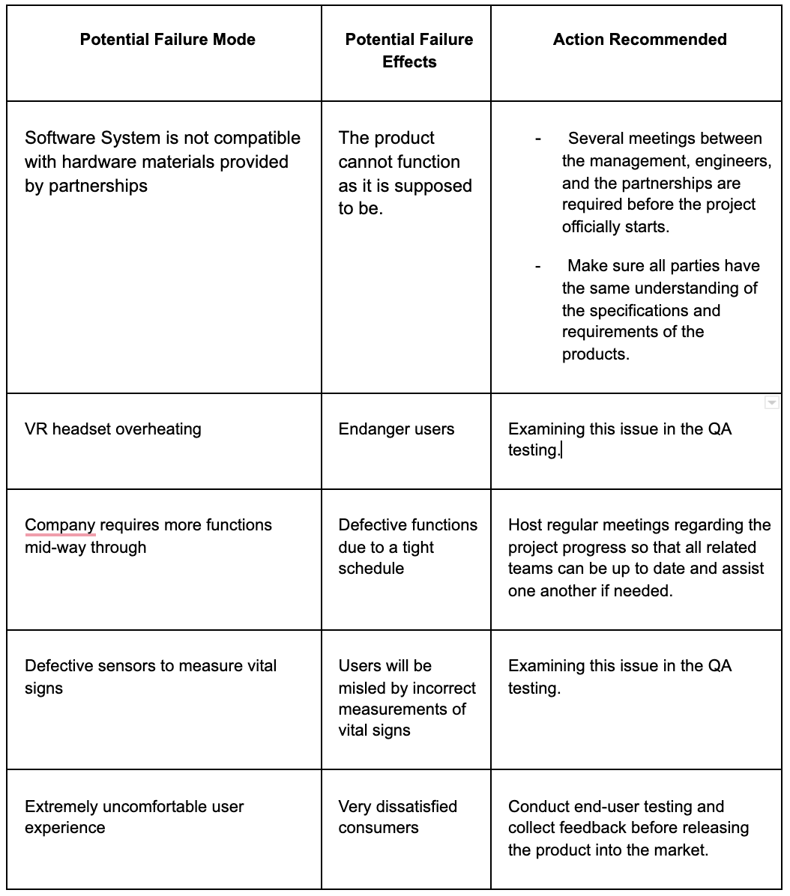
• Identify different team issues that can occur and how might they be mitigated. When will you solve it internally and when will you approach higher ups (in this case, the teaching team)?
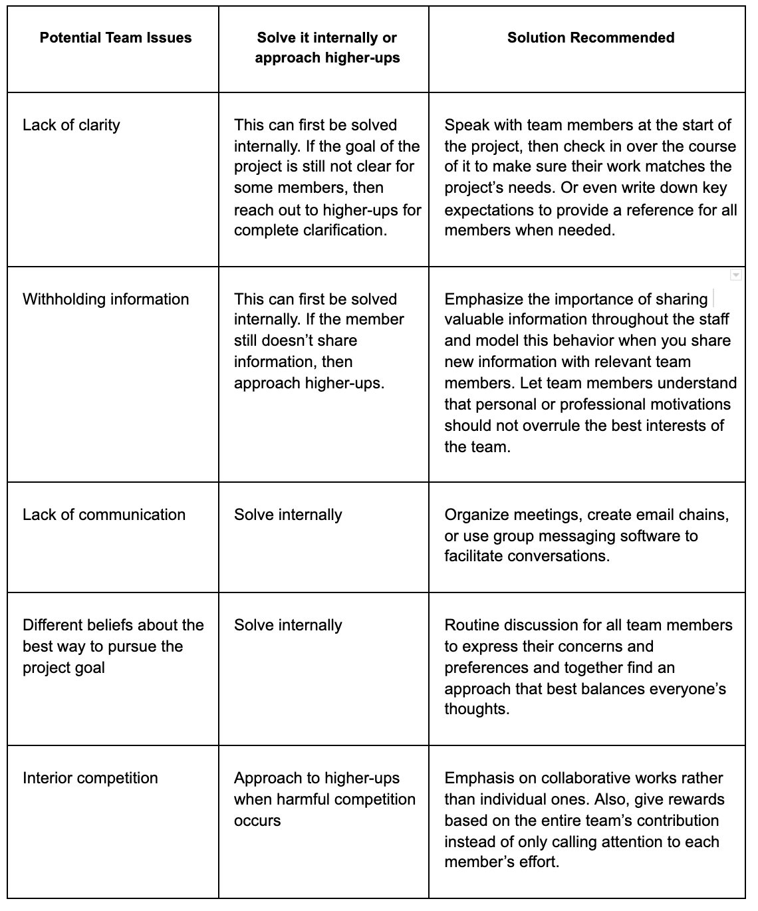
Real World Constraints
Positive environmental effects
Firstly, Oaround VR headset enables users to experience nature at home, which may mitigate the negative impact produced by human activity. VR may also cut down on some major energy consumption and waste in certain ways.
Secondly, it will enable more complex testing of a variety of initiatives and engineering projects, which can avoid the damage to the environment of field testing. It’s difficult to get into specifics in some areas, but the fight against environmental deterioration and climate change involves complex technological systems, large facilities, inventive engineering, and more than we probably can’t even imagine just yet. Building these things requires sophisticated planning, significant ingenuity, and trial and error – all of which can be aided by VR. The technology will in many cases give people the ability to test designs and visualize impact, solving problems and perfecting products, systems, and whatever else before building them and putting them into practice. In simpler terms, the side of the climate change fight involving inventions and engineering could get more precise, efficient, and effective.
Negative environmental effects
Firstly, it’s about the volume of plastic required to make the Oaround VR headset. Most of the plastic used in technology and production is made from non-renewable fossil fuels. Further, the process of forming plastic from those fossil fuels is a major source of pollution as is the fuel used to run that process.
Secondly, Oaround VR headset contains elements including lenses, motion tracking technology, and circuitry. The circuitry, made of gold and other precious and rare metals, are some of the most environmentally damaging and unscrupulously obtained materials in technological devices.
• Identify and provide solutions to positive/negative ethical effects of the project, if any
Positive ethical effects:
1. VR headset can serve as a great tool in education. VR provides students with various real-world experiences to broaden their horizons and ensures their safety.
2. VR headset can help people to explore the world and exercise with lower cost.
Negative ethical effects:
1. Users may hurt without proper protection.
2. Users may be isolated from society if they are consumed by Oaround VR headset.
3. Pornographic content may be involved.
In a realistic environment, excessive exposure to pornography could influence harmful behavior toward women.
4. Crimes in virtual reality.
Unlike playing video games, VR allows users to kill and rob in a form very similar to the real world.
• Identify and provide solutions to safety concerns of the project, if any
1. Physical hurt
Users may end up walking into walls or fail to recognize key dangers in their immediate surroundings. Therefore, real-time sensory feedback is necessary. For example, using a circular walking arc to simulate straight-line walking without ever walking past an intended boundary.
2. Eyesight
Visual perception in virtual environments may affect the growth of the eye, which can lead to myopia or nearsightedness. We can provide suggested use time for the devices.
3. Motion Sickness
In real life, our eyes naturally converge and focus on a point in space, and our brain is so used to this that it’s coupled the two responses together. Virtual reality separates those, confusing the brain. We can provide suggested use time for the devices. And we can also advise users to breathe in fresh air to mitigate it.
4. Content for kids
VR games or apps may involve some pornographic and violent scenes and experience. Children may be even more susceptible to confusing virtual reality with the real thing. We can set age restrictions for games and provide advice on parents participating.
• Can these above concerns/effects be avoided through more mindful choices during the design process of the product? If so, then how?
YES.
1. We can use more environmentally friendly materials to design the VR headset. For example, using renewable resources like leather or wood.
2. We can design the device with more precise sensor detection and control to avoid physical harm to users.
3. Reduce pornography and violence in VR games.
4. Set age restrictions for various VR games.
• What concerns might users have when using this product?
1. Whether the VR headset can provide great visual and auditory experience.
2. Whether it’s comfortable to wear.
3. The quality of this product and return policy.
4. The amount of VR games and apps to experience.
5. The endurance of VR headset.
6. The function of measuring heart rate and breathing rate.
Engineering Standards
1.
IEEE P2048.6™ Standard for Virtual Reality and Augmented Reality: Immersive User Interface
2.
IIEEE P2048.7™ Standard for Virtual Reality and Augmented Reality: Map for Virtual Objects in the Real World
3.
IEEE P2048.8™ Standard for Virtual Reality and Augmented Reality: Interoperability between Virtual Objects and the Real World
4.
IEEE P2048.9™ Standard for Virtual Reality and Augmented Reality: Immersive Audio Taxonomy and Quality Metrics
5.
IEEE P2048.10™ Standard for Virtual Reality and Augmented Reality: Immersive Audio File and Stream Formats
6.
IEEE P2048.11™ Standard for Virtual Reality and Augmented Reality: In-Vehicle Augmented Reality
7.
IEEE P2048.12™ Standard for Virtual Reality and Augmented Reality: Content Ratings and Descriptors